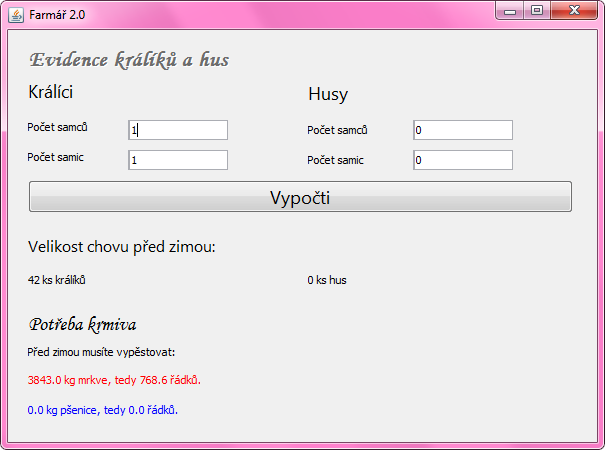

Úkol 06 - Uživatelské aplikace a události
Domácí úkol
Cílem domácího úkolu je naprogramovat jednoduchou aplikaci s uživatelským rozhraním a reakcemi na události.
Část 1 - Farmářka 2.0
Z poslední lekce máte malou farmu s husami a králíky. Jako správné farmářky se musíte o chov dobře starat a v létě vypěstovat dostatek potravy pro zvířata na zimu. V létě zvířata žerou čerstvou travičku, proto potřebujete potravu jen na zimní období, což (pro zjednodušení) považujme za dobu půl roku (půl roku je 365 dní děleno 2, tedy přibližně 183 dní).
Králíci žerou přes zimu mrkev, husy zrní. Jeden králík sní ½ kg mrkve denně a jedna husa ¼ kg zrní. Potřebujete tedy 183*0.5 kg mrkve na každého králíka a 183*0.25 kg zrní na každou husu.
Z jednoho řádku mrkve můžete sklidit 5 kg mrkve. Z jednoho řádku pšenice sklidíte 2 kg. Kolik musíte zasadit řádků mrkve a kolik pšenice, abyste měly dost potravy na zimu?

Část 2 - Farmářka 2.5
Až to budete mít hotové, udělejte ještě vylepšenou verzi. Máte-li v chovu alespoň 1 samici a 1 samce, můžete čekat, že se vám chov do zimy rozšíří a měly byste tedy vypěstovat víc potravy. Pokud tedy v aplikaci zadáte, že máte 1 samce králíka a 1 či více samic, musíte počítat s tím, že za léto bude mít každá samice průměrně 40 mláďat. U hus to bude obdobné, za léto může mít jedna husa 15 housat. (Pozn. pro měststké děti, jako je Kamil: Přes zimu se zvířátka na farmě nerozmnožují).
Rady na cestu:
Až naprogramujete jednodušší zadání bez rozmnožování chovu, rozšiřte program o zadání počtu samců a samic místo pouze počtu kusů králíků a hus. Ve výpočtech zohledněte jejich množení.
Do velikosti chovu nezapomeňte kromě mláďat připočíst i původní samce a samice. Nezapomeňte také ohlídat, že se chov nemůže rozmnožovat, pokud nemáte samce nebo samici.
Pozor při dělení intu intem
(např. 11/2) vyjde opět int
a zaokrouhluje se odtržením desetinných míst.
Doporučujeme pro dělení používat double.
Převod ze Stringu na double se provádí pomocí:
String text = ...
double cislo = Double.parseDouble(text);
A převod z double na String se provádí:
double cislo = ...
String text = Double.toString(cislo);
Pokud budete mít s úkolem jakýkoliv problém, využjte naši
facebookovou skupinu,
kde vám rádi poradíme.
Raději se 10x zeptejte, než abyste to vzdaly.
Pokud jste v hodině nedokončily Husy a králíky, můžete si fungující řešení stáhnout na tomto webu v příspěvku k Lekci 06.
Část 3
Z minulé hodiny máte navrhnuté uživatelské rozhraní kalkulačky.
Vytvořte reakce na tlačítka 0 až 9 a CE.
Případně můžete zkusit . a +-, ale není to nutné.
V této části NEprogramujte další funkcionalitu (sčítání, odčítání, atd.).
Nehledejte v tom složitosti.
Po stisku každého tlačítka se pouze do textového pole přidá
příslušný znak.
Pouze pokud je v textovém poli "0", příslušným znakem se nahradí,
místo aby se za ni znak přidal.
Porovnat, zda je ve Stringu nějaký text, se neprovádí
operátorem ==,
ale pomocí equals().
Je to trochu zvláštní, ale vychází to z toho,
že String je objekt a operátor ==
by porovnal fyzickou
identitu dvou objektů typu String, nikoliv shodnost písmenek uvnitř.
// Špatně
if (text == "0") {
}
// Správně
if (text.equals("0")) {
}
Doporučuji vytvořit si jednu metodu, která bude do textového pole přidávat číslici, co přijde jako parametr této metody. Tuto jednu výkonnou metodu pak volejte z metod, které fungují jako obsluhy událostí stisku jednotlivých tlačítek.
Zhruba takto:
private void priStiskuBtn1(ActionEvent evt) {
pridejCisliciDoRadku("1");
}
private void pridejCisliciDoRadku(String cislice) {
// TODO: Naprogramovat
}
Část 4 - Bonusová, nepovinná
Nepovinně můžete zkusit naprogramovat i základní funkce
kalkulačky, jako je sčítání, odčítání, násobení, dělení.
Pro tuto funkcionalitu je nutné po stisknutí
příslušného tlačítka převést text v textovém poli
na číslo, to si schovat v proměnné a vynulovat textové pole.
Při následném zadání druhého čísla a stisku tlačítka =
převedete i druhý text na číslo a provedete operaci.
Tato část je nepovinná. Opravdu ji dělejte, jen pokud vás to bude bavit :-)
Odevzdání domácího úkolu
Domácí úkol (složky s projekty)
zabalte pomocí 7-Zipu pod jménem Ukol06-Vase_Jmeno.7z.
(Případně lze použít prostý zip, například na Macu).
Takto vytvořený archív nahrajte na Google Drive
do složky Ukol06.
Vytvořte snímek obrazovky spuštěného programu a pochlubte se s ním v galerii na Facebooku.
Pokud byste chtěli odevzdat revizi úkolu (např. po opravě),
zabalte ji a nahrajte ji na stejný Google Drive znovu,
jen tentokrát se jménem Ukol06-Vase_Jmeno-verze2.7z